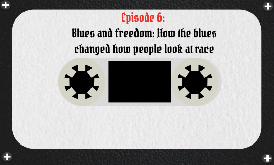
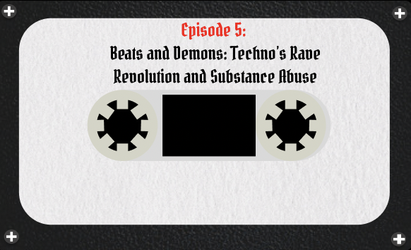
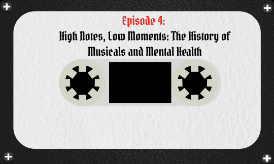
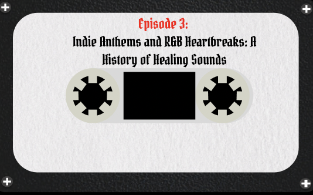
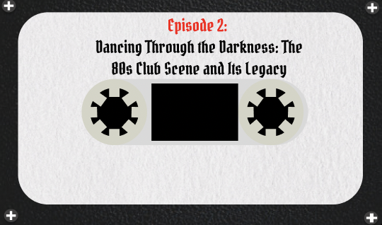
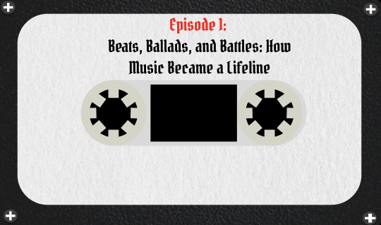

How Blues music changed how they looked at African Americans.
Episode 5

Explore the origins of techno in Detroit, the rise of rave culture, and how the hedonism of the
scene sometimes led to struggles with substance abuse.
Episode 4

A deep dive into how Broadway and musicals like Rent and Next to Normal address real-life struggles
while offering an escape.
Episode 3

Trace the emotional storytelling of indie and R&B, from the civil rights movement’s soulful anthems
to today’s confessional indie tracks.
Episode 2

Unpack the history of music as therapy, from disco in the '70s to the techno-fueled escapism of the
'80s, and its ties to LGBTQ+ communities.
Episode 1

Explore the transformative role of music through major historical moments, such as the Civil Rights
Movement, the AIDS crisis, and post-pandemic healing.